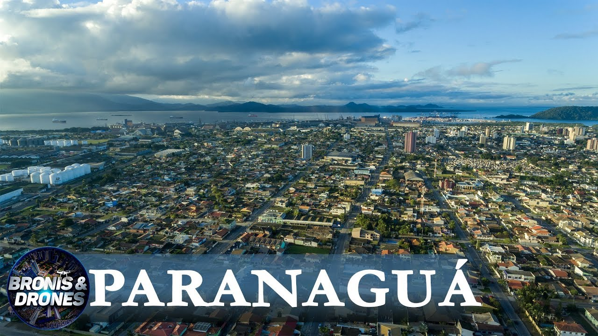

Instituto Federal do Paraná
Campus Paranaguá
Localização
Paranaguá significa “Grande Mar Redondo” (Pernagoa) em tupi guarani, sendo “Paraná” o significado de Grande Rio e “Goá” o significado de Redondo, uma referência à Baía de Paranaguá. É um município brasileiro localizado no litoral do estado do Paraná. É a cidade mais antiga do estado, sendo também chamada de ” berço da civilização paranaense”. A economia da cidade está intimamente ligada ao funcionamento do Porto Dom Pedro II, importante terminal , corredor de exportação do Estado, além do comércio, turismo, agricultura e pesca.

Desenvolvido por: Bill Gates